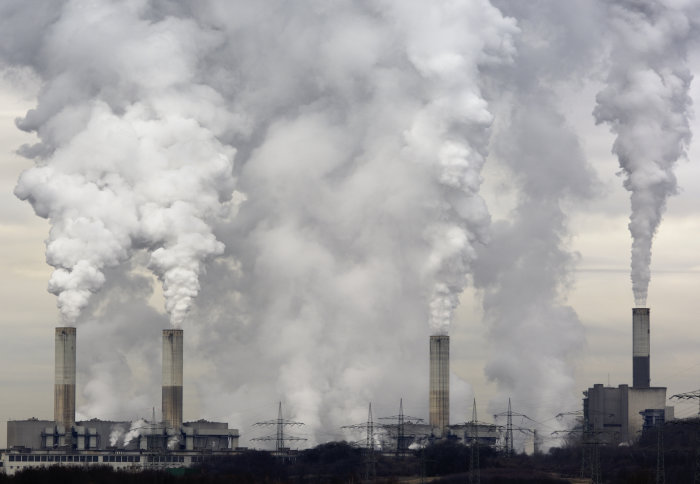

Check out our video and learn more about us! ❤️
Our Latest Campaign
Keep Fossil Fuels out of Clean Energy Finance
Clean energy funding should be spent on clean energy, but the Federal Government wants to fund dirty fossil fuel projects.
They are pushing new laws to subvert funding from The Clean Energy Finance Corporation (CEFC)
and the Australian Renewable Energy Agency (ARENA) to prop up polluting gas and unproven carbon capture and storage.
Interested to become a volunteer? Join us!